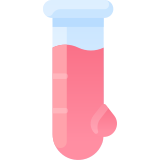
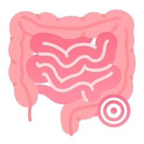

受訪者：高雄醫學大學附設中和紀念醫院 王照元 副院長
受訪者：高雄醫學大學附設中和紀念醫院 王照元 副院長
撰稿者：羅氏大藥廠 - Patient Journey Partner, Steve Yeh

近年來COVID19肆虐，疫情降低了民眾接受癌篩的意願，也連帶減少了大腸癌篩檢的人數，衛生福利部屏東醫院院長王照元教授指出，在COVID19的這段時間，國內於民國110年的大腸癌篩檢量，比起民國109年降低了15%，大腸癌篩檢總人數減少了19.4萬人，若是以大腸癌陽性率來換算的話，將會少了680位大腸癌患者早期被診斷出來，若是能早期發現大腸癌的話，5年存活率在9成以上，但如果是在第四期的話大腸癌5年存活率就會掉到1成3左右，因此早期診斷出大腸癌是非常重要的。
目前大腸癌的篩檢方式有兩種，分別為免疫法糞便潛血檢查以及大腸鏡，王照元教授指出，根據國民健康署110年的資料，透過糞便潛血檢查發現有31,611位是屬於癌前病變，而2,191位為大腸癌。
根據國民健康署政策，提供50-74歲的民眾每2年免費一次的「定量免疫法」糞便潛血檢查，檢查前亦不需要限制飲食，非常方便。王照元教授表示，透過每兩年一次的糞便潛血檢查，可以降低35%的大腸癌死亡率，若從大腸癌篩檢的資料來看，有將近一半的0-2期大腸癌患者是透過篩檢檢查出來的，透過篩檢可以將早期的大腸癌病人偵測出來。
如果糞便潛血檢查為陽性的話，民眾也先不用慌張，王照元教授指出，若糞便潛血檢查為陽性的話，有3成以上是瘜肉或是癌症，還是要接著做大腸鏡來檢查會比較準確，如果是糞便潛血檢查陽性，超過6個月以上才做大腸鏡的話，得到大腸癌的風險會增加3成左右，若是一直不去做大腸鏡的話，死亡風險會增加到6成4，所以若是糞便潛血檢查陽性的話建議大家還是要去做大腸鏡。
可能有民眾會覺得大腸鏡是比較侵入性、過程中也會有不適感，因此降低了做大腸鏡的意願，王照元教授指出，現今有無痛大腸鏡檢查可供大家選擇，無痛大腸鏡檢查是透過麻醉的方式減少檢查過程中的不適感，可以降低民眾對於大腸鏡檢查的恐慌。
王照元教授呼籲大家，免疫法糞便潛血檢查是一個非常方便、簡單的工具，政府也有相關的補助措施，若是符合條件的民眾，還是需要做大腸癌的篩檢，透過大腸癌篩檢可以早期發現異常、早期接受治療，進而阻止大腸癌的發生及惡化。